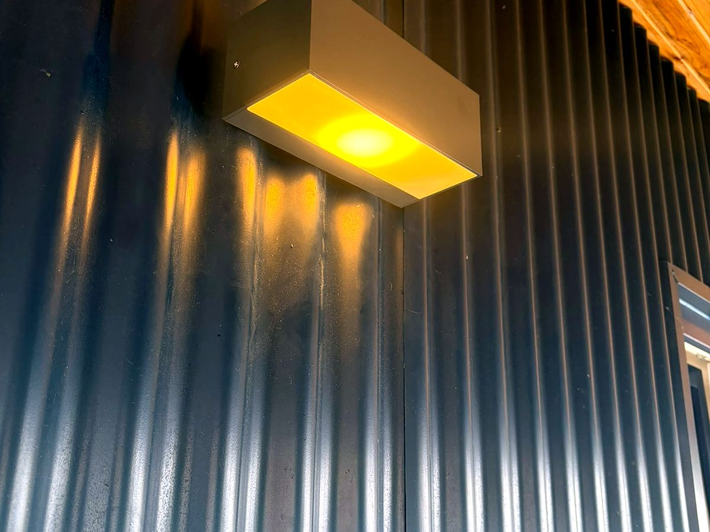
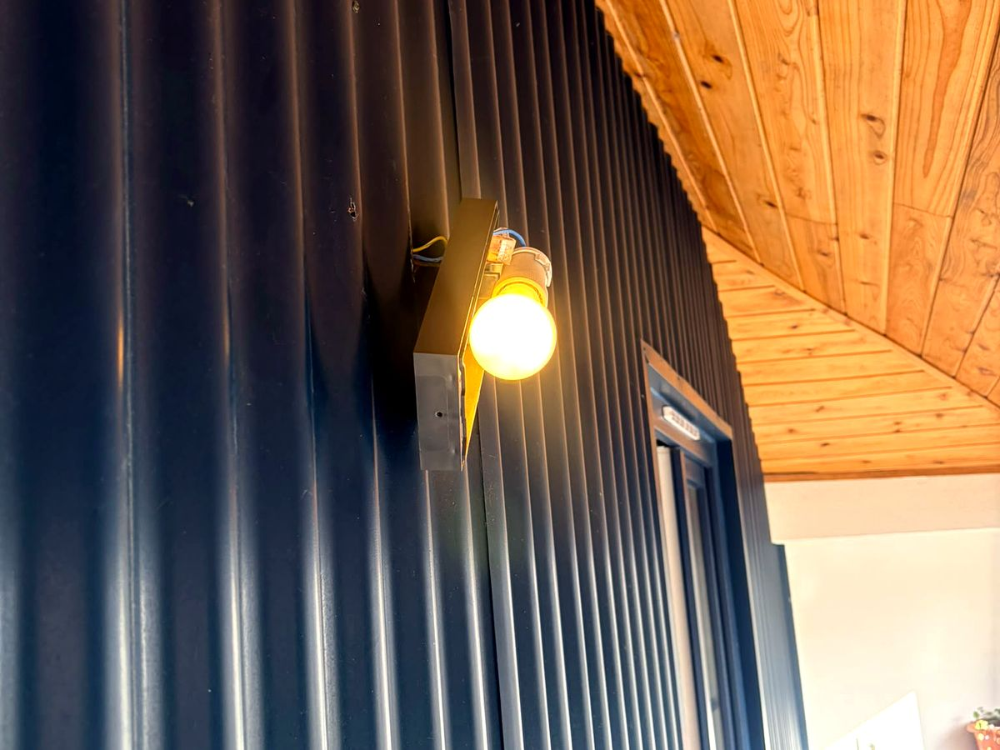
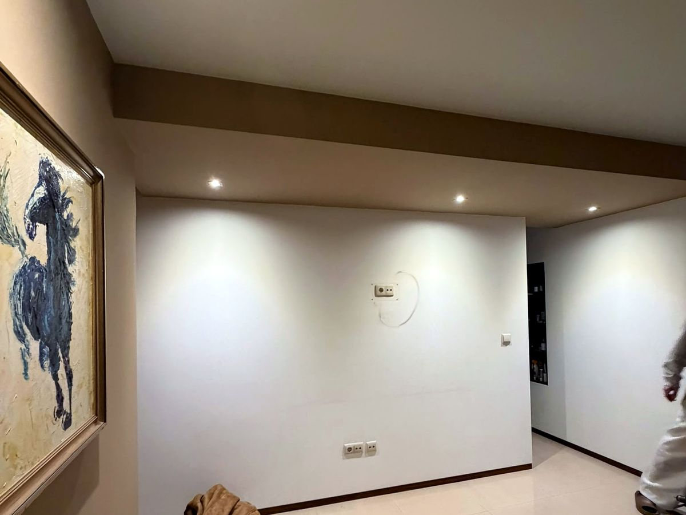
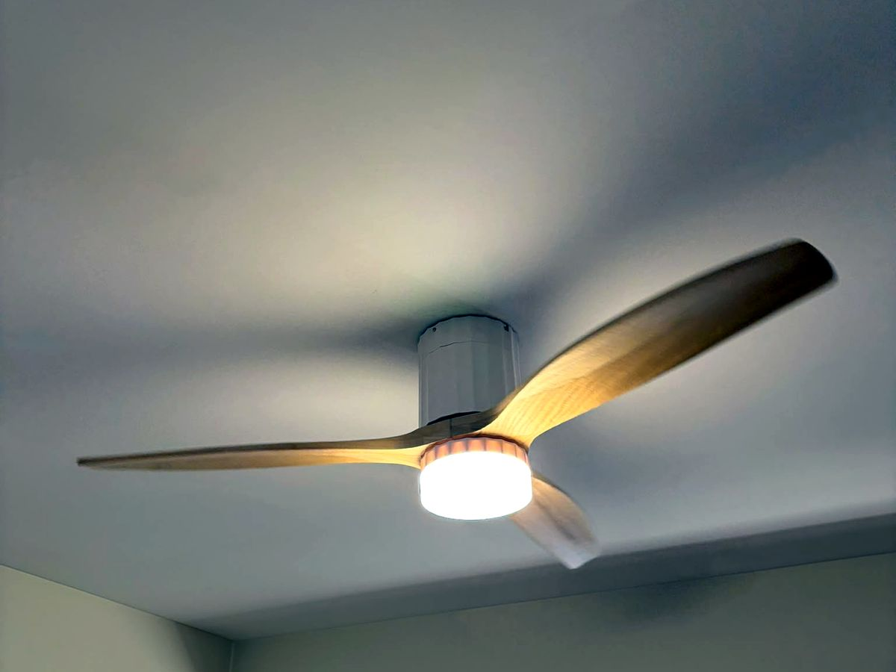
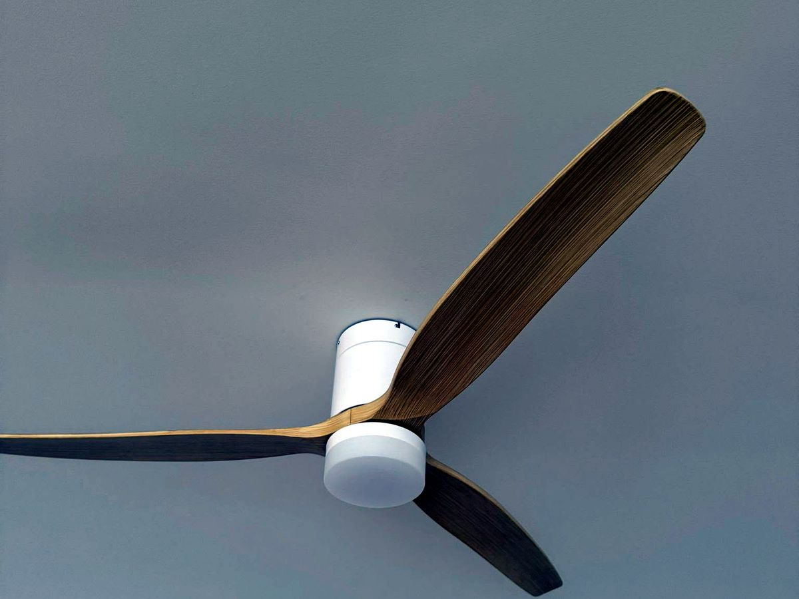
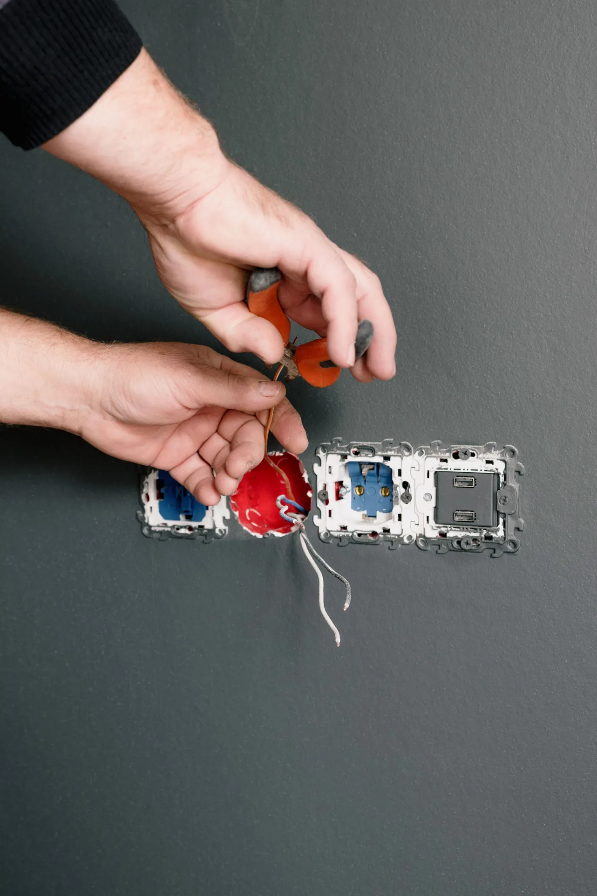

Eletricidade
o essencial, bem feito
Trocar uma tomada, um interruptor, uma luz ou um disjuntor. Trabalhos pequenos, feitos com cuidado e testados no fim. Não fazemos quadros elétricos nem instalações novas.
Há trabalhos que não precisam de uma equipa nem de uma obra: uma tomada partida, um interruptor que falha, uma luz para trocar, um disjuntor que dispara. É isso que a Dizarro faz — depressa e a deixar a casa limpa. Quadros elétricos e instalações novas não fazemos.
O que fazemos
- Troca de tomadas e interruptores
- Troca de luminárias, apliques e candeeiros
- Substituição de disjuntores
- Interruptores com regulação (dimmer)
- Pequenos arranjos em tomadas e pontos de luz
- Não fazemos: quadros elétricos nem instalações novas
Como trabalhamos
Diga-nos o que tem; combinamos o preço antes de mexer. O trabalho é testado no fim e a casa fica arrumada.
Exemplo real
Montagem de um aplique de parede numa fachada de chapa: do aplique com os fios à vista ao acabamento com a caixa fechada.
Antes & depois — trabalho real
Aplique de parede numa fachada de chapa: do aplique com o casquilho e os fios à vista ao acabamento com a caixa fechada.





